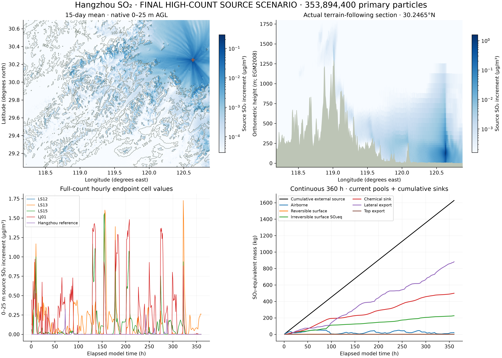

SCIENTIFIC · FINAL HIGH-COUNT SOURCE SCENARIO · CPU
Continuous 15-day source transport.
353,894,400 primary particles · 500 m native density bins · 52 AGL layers · 30 s scalar operator.



Particle sampling comparison
The primary count is1024 times the original stage15 case. A single new count is not a convergence proof. The complete-domain differences, without an error-selected mask or rescaling, are saved separately.
Daily full-domain comparison · Five fixed native receptors · Definitions and source hashes
Native quantities
Full-count hourly endpoint cell masses are converted using actual 500 m × 500 m × layer thickness. The0–25 m quantity is a volume mean, not a 2 m observation. Daily concentrations average24 endpoint samples; surface pools saved each day are day-end stores, not daily averages. All native values remain F64; display quantization and opacity do not enter the numerical query.
The displayed near-outlet volume is an hourly accepted-path residence diagnostic of a fixed-ID subset, expanded for display only. It is not full-count instantaneous concentration or an unbiased random sample. Its temporal support differs from regional hourly endpoints; spatial visual weighting does not make one conservative concentration field. Physical mass is never added from these overlapping views.
The final24 hours have eight actually replayed diagnostic member IDs per source/event, versus one earlier. Saved original paths and selected final states agreed bit for bit. This is a denser diagnostic view; the30-second path resolution and full-count native fields are unchanged.
Mass and surface exchange
The closed ledger contains airborne mass, current reversible and irreversible surface stores, chemical sink and exported mass. Gross contact, wet deposition, fixation and re-release are internal transfers and must not be added to these stores again. Maximum closure residual: 6.23004e-10kg against the unchanged 1e−7 kg tolerance. Geometry stops: 7249; penetration flags: 0; DDA failure flags: 0.
Modeled forecast re-release: 0kg. The preserved original warm/dry1 kg-pool mechanism control returned 0.69797084 kg gross; the cool/wet and zero-source controls were zero. Those weather overrides are controls, not real forecast weather. Surface coefficients remain uncalibrated.
Limits and provenance
Four conditional EIA design outlets emit 4.519 kg/h. Future operation, flow standardization and coordinate datum remain uncertain. Background and chemical inflow are excluded. The frozen GFS initialization is13 November 2026 00UTC; the simulated source period is14–28 November CST. A central forecast profile is repeated horizontally, without terrain-driven wind, ambient vertical velocity, building-flow or CFD/LES. This is a custom passive stochastic transport scenario, not WRF/FLEXPART or observed total Hangzhou SO₂.
The physical bilinear DSM is sampled on 500 m nodes and uses EGM2008 orthometric heights. Scientific figures use height scale 1×. The main3D scene uses display height ×1.8 plus historical land-cover and actual building footprints, with mostly schematic building heights. These display assets do not affect transport.